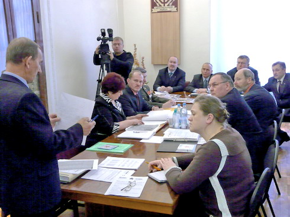

| В ходе реконструкции мемориального комплекса «Смоленское воинское захоронение» Фондом «Жить и Помнить» проведена проверка персональных сведений о захороненных на нем в годы Великой Отечественной войны воинах Красной Армии, подпольщиках и партизанах.
18 января 2010 г. о результатах этой проверки были проинформированы депутаты Тверской городской Думы.

В приложении к паспорту воинского захоронения № 69 - 603, г. Тверь, Московский р-н, Вагжановский пер. было учтено 223 захороненных. В том числе по категориям:
- офицеров - 14
- сержантов и старшин - 31
- рядовых - 150
- партизан - 8
- подпольщиков - 20
В ходе работы найдены документы, содержащие персональные сведения на 208 человек. Были установлены или исправлены личные данные захороненных:
- воинские звания - 11чел.;
- фамилии - 32 чел.;
- имена - 19 чел;
- отчества - 20 чел.;
- год рождения - 35 чел.;
- дата гибели/смерти - 39 чел.;
- последнее место службы - 176 чел.
Большая часть захороненных на мемориале - воины Красной Армии умершие от ран и болезней в 1942 году в госпиталях, находившихся в городе Калинине. Из них:
- умерли от ран - 125 чел.;
- умерли от болезней - 54 чел.;
- иная причина смерти - 6 чел.
Документальное подтверждение смерти в госпиталях имеется у 164 военнослужащих. Соответственно по госпиталям:
- ЭГ 2749 - 125
- ЭГ 3822 - 20
- ЭГ 1969 - 4
- ЭГ 1783 - 5
- ЭГ 3829 - 4
- ЭГ 3420 - 2
- ЭГ 1923 - 1
- ЭГ 3046 - 1
- ЭГ 2659 - 1
- ХППГ 381 - 1.
Перед Фондом не стояла задача проверки сведений о захороненных подпольщиках и партизанах. Однако мы смогли и по этой категории у трех партизан и подпольщиков уточнить фамилии, имена и отчества, у одного - дату гибели.
Источниками информации для проверки сведений о захороненных явились:
- донесения воинских частей о безвозвратных потерях;
- записи в региональных Книгах Памяти;
- госпитальные книги учета умерших;
- сведения, полученные от региональных поисковых объединений.
По результатам проделанной работы мы предлагаем:
1. Исключить из списка захороненных 11 человек: пять из них как захороненных и увековеченных на других воинских мемориалах и шесть - как дважды включенных в список.
2. Дополнительно включить в список захороненных и увековечить память на воинском мемориале 12 человек.
3. По завершению реконструкции мемориала оформить новый паспорт (учетную карточку) воинского захоронения и приложение к нему в виде списка захороненных. Направить паспорт в Управление по увековечению памяти погибших при защите Отечества МО РФ и корпорацию «ЭЛАР» для внесения в Обобщенный компьютерный банк данных, содержащий информацию о защитниках Отечества, погибших и пропавших без вести в годы Великой Отечественной войны, а также в послевоенный период (ОБД Мемориал).
Проделанная Фондом работа получила высокую оценку депутатов и Главы города Твери В.И. Бабичева
|